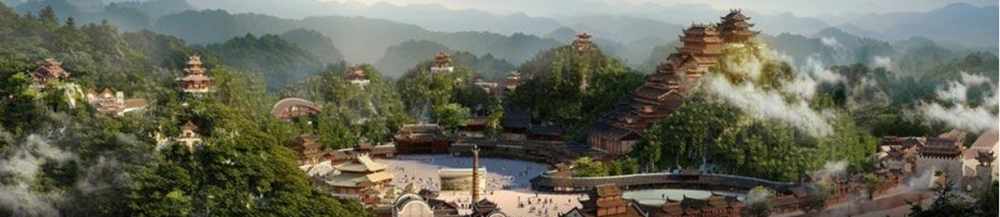
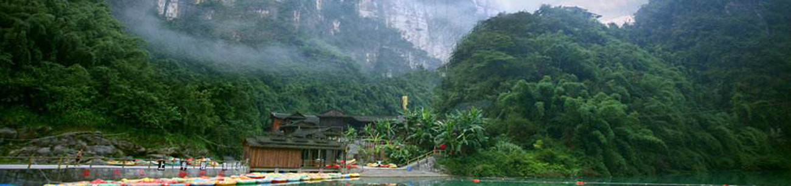

蚩尤九黎城
位于重庆市彭水县绍庆街道与靛水街道结合部的亭子坝，东经摩围山隧道与彭水老城区相连，南接彭水新城，北至乌江并与湘渝高速下线互通。总建筑面积11万平方米, 是国家AAAA级旅游景区。蚩尤九黎城是中国最大的苗族传统建筑群，主要建筑包括：标志门楼、九道门、九黎宫、九黎部落、北斗七星、苗王府、蚩尤大殿、禹王宫、善堂、盘瓠大殿、百苗长廊、九黎神柱、艺武场、百戏楼、游客服务中心、购物长廊、美食一条街等。 主要建筑:九道门、九黎宫、九黎神柱、九黎遁道、九黎部落、蚩尤大殿、苗王府、百戏楼、天权阁、北斗七星亭、禹王宫、演武场、盘瓠大殿、古城墙和碉楼。
位于重庆市彭水县绍庆街道与靛水街道结合部的亭子坝，东经摩围山隧道与彭水老城区相连，南接彭水新城，北至乌江并与湘渝高速下线互通。总建筑面积11万平方米, 是国家AAAA级旅游景区。蚩尤九黎城是中国最大的苗族传统建筑群，主要建筑包括：标志门楼、九道门、九黎宫、九黎部落、北斗七星、苗王府、蚩尤大殿、禹王宫、善堂、盘瓠大殿、百苗长廊、九黎神柱、艺武场、百戏楼、游客服务中心、购物长廊、美食一条街等。 主要建筑:九道门、九黎宫、九黎神柱、九黎遁道、九黎部落、蚩尤大殿、苗王府、百戏楼、天权阁、北斗七星亭、禹王宫、演武场、盘瓠大殿、古城墙和碉楼。
阿依河原名长溪河，发源于贵州省务川县分水乡，向东北蜿蜒而入重庆市彭水县境，经长旗坝、舟子沱、三江口，最后由万足乡长溪滩处注入乌江。阿依河地处重庆市彭水苗族土家族自治县，苗家人把善良、美丽、聪慧的女子称为"娇阿依"，阿依河因此得名。阿依河景区融山、水、林、泉、峡于一体，集雄、奇、险、秀、幽于一身。阿依河漂流是AAAA级景区，风景独特美丽，正在打造成为"爱情治愈"圣地。主要景点：千步梯、巴山廊亭、竹板桥、青龙谷、青龙桥、青龙洞、 牛角寨、七里塘。乘坐观光电梯，阿依河碧潭秀水,母子溪峡谷丽景尽收眼底。

醉美阿依河
阿依河原名长溪河，发源于贵州省务川县分水乡，向东北蜿蜒而入重庆市彭水县境，经长旗坝、舟子沱、三江口，最后由万足乡长溪滩处注入乌江。阿依河地处重庆市彭水苗族土家族自治县，苗家人把善良、美丽、聪慧的女子称为"娇阿依"，阿依河因此得名。阿依河景区融山、水、林、泉、峡于一体，集雄、奇、险、秀、幽于一身。阿依河漂流是AAAA级景区，风景独特美丽，正在打造成为"爱情治愈"圣地。主要景点：千步梯、巴山廊亭、竹板桥、青龙谷、青龙桥、青龙洞、 牛角寨、七里塘。乘坐观光电梯，阿依河碧潭秀水,母子溪峡谷丽景尽收眼底。是自然景观与人造奇迹的完美结合。
阿依河原名长溪河，发源于贵州省务川县分水乡，向东北蜿蜒而入重庆市彭水县境，经长旗坝、舟子沱、三江口，最后由万足乡长溪滩处注入乌江。阿依河地处重庆市彭水苗族土家族自治县，苗家人把善良、美丽、聪慧的女子称为"娇阿依"，阿依河因此得名。阿依河景区融山、水、林、泉、峡于一体，集雄、奇、险、秀、幽于一身。阿依河漂流是AAAA级景区，风景独特美丽，正在打造成为"爱情治愈"圣地。主要景点：千步梯、巴山廊亭、竹板桥、青龙谷、青龙桥、青龙洞、 牛角寨、七里塘。乘坐观光电梯，阿依河碧潭秀水,母子溪峡谷丽景尽收眼底。是自然景观与人造奇迹的完美结合。